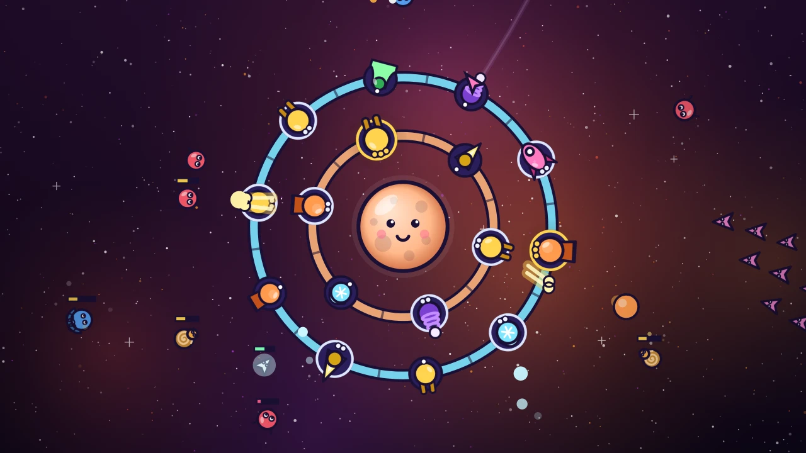

Hexan.js — FPS No downloads or plugins. Direct browser execution.Whirlwatch
Spin two orbital rings of turrets to aim them all at once, merge twins into stronger towers and keep a little moon safe from 40 levels of space critters.
Whirlwatch is a tower defense game where the towers move. A sleepy little moon floats in the middle of the screen, wrapped in two rings of turret slots, and swarms of space critters drift in from every direction. Every turret only fires in front of it, so the real trick is aiming: drag anywhere to spin the inner ring and the outer ring turns the other way, geared like clockwork. Swing the right towers to face each wave before it arrives.
Build with stardust that the critters drop. Pebblers fire quick twin pellets, Frostbloom sprays icy mist that slows everything in its arc, Comet Mortar lobs splashing comets that crack armored Shellbacks, Arc Coil chains lightning between neighbours, Sunlance burns a long beam straight through armor, Gustbell blows whole groups back out, and Seeker Pods launch homing rockets in every direction. Tap two matching turrets to merge them into a stronger tier, up to tier III, or sell one to change your plan mid-wave.
The campaign has 40 levels across four star systems, from Pebble Reach and Ember Drift to Frostfall Belt and the Void Crown. Each system brings new critters, from speedy Darts and splitting Splitters to Swirlsnails that spiral as they come, Menders that heal their friends, blinking Phaselings and Broodmothers that hatch mites. Every tenth level ends in a boss: the Gloomwhale, the Ringcrawler, the Ember Twins and finally the Eclipse Maw with its orbiting shield moons. Warning arrows at the screen edge show where each wave will come from, so you always get a moment to turn.
Every level has three star goals shown before you start, during play and on the results card, such as losing almost no shield, building a tier II turret or finishing with stardust in the bank. Stars and level clears earn moonstones for the Moon Lab, where permanent upgrades add moon shield, starting stardust, turret damage, bigger bounties, better sell prices and a Prism Core that zaps critters that get too close.
The Daily Orbit is a new endless run every day with the same seed and the same three turret types for every player, so scores are comparable. Keep a daily streak, see how your score ranks, share a picture card of your rings, or send a challenge link that dares a friend to beat your score. The score travels inside the link, so nothing is uploaded.
Progress saves automatically on your device. Whirlwatch plays offline in portrait or landscape on phones, tablets and desktop, and every action works with one finger. Optional ads can revive you once in a level or double the moonstones from a level; they are never required.